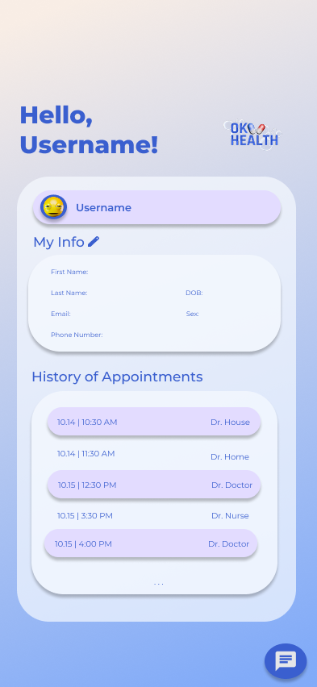
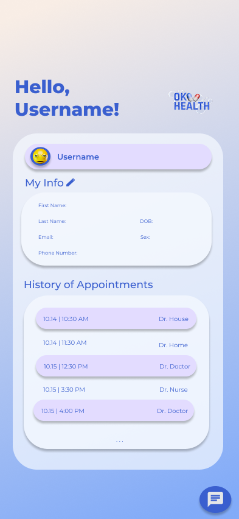

OKHealth

Color Palette
A monochromatic blue palette was chosen for the interface due to its calming qualities and association with reduced visual stress. Since this is a scheduling system used for extended periods of time, the color choice prioritizes long-term comfort and focus. Whites and varied blue shades with adjusted opacity were used for text and interactive elements to maintain clear contrast while preserving a cohesive, unobtrusive visual hierarchy.
Choosing email sign-up leads to a short form. The app asks only for what it actually needs. A wellness app built around encouragement doesn’t need your full life story, and adding friction here would work against the tone set earlier. You land in the Main Hub — the center of the app. From here, every core feature is reachable, giving you orientation immediately instead of making you hunt for it.
Responsiveness
Wherever possible, Quackwell sticks to established mobile interaction patterns. Familiar gestures and visual conventions are used intentionally—destructive actions behave as expected, expandable content is predictable, icons stay recognizable, and progress is shown through familiar circular indicators. This keeps cognitive load low and lets users focus on their habits, not the interface.
 
